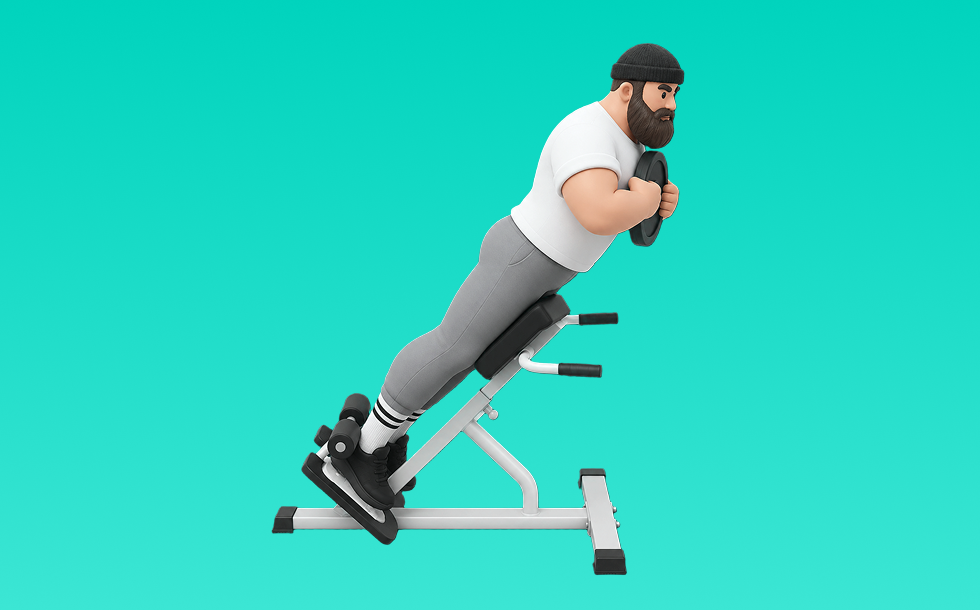

バックエクステンション

バックエクステンションとは、マシンを使って「動かす」動作で背面（脊柱起立筋）、臀筋を鍛える種目です。軌道が安定して狙った部位に効かせやすいのが特徴で、反動を抑えてコントロールしながら反復します。腰背部の強化と姿勢改善が期待できます。
- 対象部位
- 背中
- 器具
- 自重
- 記録形式
- 回数
- 別名
- ハイパーエクステンション
YouTube動画
-
【バックエクステンションのやり方】「デッドリフトで腰痛めた」「怪我で出来ない」という方へ。脊柱起立筋を鍛えるのに超優秀な種目◎
-
猫背を改善したいなら！バックエクステンションの正しいやり方【ヘイキ先生解説】
-
背中や腰の筋肉を強化！「バックエクステンション」の正しいやり方【15回×3セット】
-
バックエクステンション（背筋）の効果的なやり方
-
【初心者】バックエクステンションのやり方 | ハムストリング お尻 背中を追い込む【ビーレジェンド プロテイン】
-
【背中の自重筋トレ】「バックエクステンション」の正しいやり方を解説！
-
【バックエクステンション】やり方あってます？
-
【ジムトレ】バックエクステンションマシンの基本の使い方〜腰・背筋を鍛える・初心者おすすめ
-
背筋のトレーニング｜まずはこれから【3分間】
-
【背筋台のバックエクステンション】背骨を柔軟に使えないと｢腰が痛くなるだけ｣ 2022年10月3日投稿
-
自重の背筋メニュー「バックエクステンション」。姿勢改善や肩こり予防に
-
バックエクステンション（トレーニング動画）
-
【バックエクステンション】自重＆ベンチマシン別の正しいやり方を解説
-
【初心者にも超分かりやすい！】ジムでの基本背中トレメニュー
-
最も効率の良いバックエクステンションを考案しました
-
マシン説明〜バックエクステンション〜
-
バックエクステンションのプレートで重量を上げたやり方
-
【宅トレ奥義】岡田流バックエクステンションで肩と背中の筋肉を盛り付けろ！ 【新・バズーカ岡田チャンネル】 #バズーカ岡田
-
背筋を毎日10回行うとどうなるのか
-
【マシン】バックエクステンション【使い方】
-
つま先、膝の向きでもも裏の使い分け！バックエクステンションもも裏狙い！
-
背中の筋肉を美しく鍛える！背中バッキバキトレーニング「リズムバックエクステンション」のやり方
YouTubeショート
-
バックエクステンションの使い方【MATRIX】G7-S52
-
【バックエクステンションの正しいやり方】ローマンベンチ、ちゃんと使えてる？｜Training Movie 100｜Tarzan
-
これを知らなきゃ腰を痛める！安全で効果的なバックエクステンション
-
バックエクステンション［マシン］の使い方
-
バックエクステンションの専用ベンチを使った基本フォームとやり方
-
背中が成長しないラットプルダウン
-
【背筋】自重だけで背中を鍛える！背筋トレーニング 3選
-
【IFBB PRO 上里選手】筋トレ初心者必見!!背中種目で注意すべきこと
-
バックエクステンション ノーマル /// SPORTICS WORKOUT スポーティックスワークアウト
-
【両店共通】バックエクステンション 使い方動画
-
【バックエクステンションマシン】part 1 筋肉も柔軟性も身に付く背筋 2021年7月8日作成 @healthunionoda506
-
背中を最大限に鍛える種目3選【筋トレ】
-
正しいラットプルダウン4つのポイント【筋トレ】
-
バックエクステンションのやり方(背中、お尻、太ももの裏)#女性専用ジム #くびれ #茗荷谷 #24時間ジム #筋トレ女子
-
背中トレのやり方🔥〜ダンベルワンハンドロー基礎編〜 #筋トレ #マッチョ #筋肉社長 #背中トレ
-
【腰・お尻・もも裏】バックエクステンション正しい使い方ガイド💪
-
バックエクステンションの使い方(SHUA)
-
バックエクステンション背中とお尻の鍛え分け
-
スクワットの正しいやり方【筋トレ】
-
【これ、間違いです】肩すくみ腕引きワンハンドローイング
-
【バックエクステンション】の使い方♪ワールドプラスジムでレッツトライ！
-
難しいディップス、このやり方でしっかり胸に効かせられます！#筋トレ#胸トレ#ディップス#ボディメイク#トレーニング
-
【背中引き締め】背中とお尻を引き締める背筋トレーニング | バックエクステンションのやり方【キレイナデシコ Fitness】
-
【忙しい人向け】1日30分で鬼の背中を作るトレーニング#shorts #youtubeshorts ##筋トレ大学#ダイエット#筋トレ
動作方法
- 体幹を固定して姿勢を整える
- 反動を使わず、腹部の収縮を感じる
- 呼吸を止めずに動作する
動作ポイント
- 腰を反らしすぎない
- 首に力を入れすぎない
ワンポイントアドバイス
- 腕ではなく背中で引く感覚を優先する
- 反動が増えたら重量を一段下げる
目的別回数設定
目的や体力に応じた一般的な目安です。無理のない範囲で調整してください。
- 筋力アップ
- 1〜5回
- 筋肥大
- 6〜12回
- 持久力アップ
- 13〜20回
YouTube動画について
動画はYouTubeの公開情報をもとに表示しています。内容は投稿者によるもので、Biggrによる監修ではありません。
アプリを入手
筋トレやトレーニングの記録はBiggrにお任せください。今すぐ無料で使い始められます。